Exam <<
Previous Next >> Exam2
Exam1
Exam1 (10%): 建立 Webots 基本物件模擬場景
操作影片標題: 國立虎尾科技大學 - 機械設計工程系 - cd2025 Exam1 - 41223243
exam1
操作流程:
建造一個robot，然後於children中增加兩個hinge joint與1個solid。
於solid的部分，將其改名為base，並於solid的children，右鍵新增一個shape，然後於geometry處對他按右鍵新增box，將X的部分調為1米。
※之後將不再贅述建立box的步驟。
任選一hinge joint，將選擇的hinge joint改名為hinge joint1，另一個改名為hinge joint4。
進入hinge joint1的主線程下方，選擇它的endpoint右鍵新增solid，然後調整數值，如下圖。
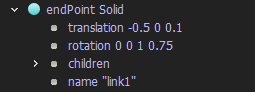
※注意rotation的部分是需要根據學號來進行調整，本人最後兩碼43，轉成rad就是0.7505rad。
然後children處新增pose與hinge joint，將hinge joint改名為joint2。
pose與其shape中的box如下
一號link
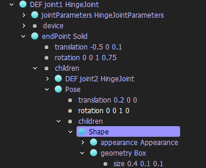
然後是joint2的部分與joint1的步驟相同，一樣在children新增solid然後建立pose(box中心)以及一個hinge joint，然後改名為joint3，然後建立第三個box。
二號link(下方第二章圖是短桿部分的設定)
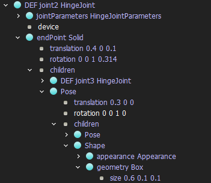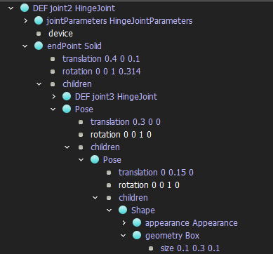
三號link
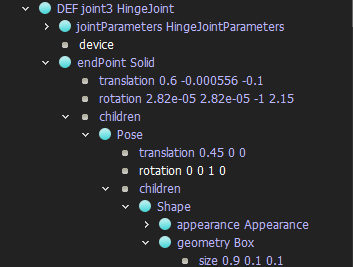
至此box部分結束，接著開始設置jointparameters部分。
joint1的部分
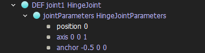
除此之外，還要再joint1放置一個旋轉馬達，並命名為motor(控制程式中的命名)
joint2的部分
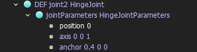
joint3的部分
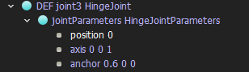
然後是幫link1、link2、link3建立boundingObject
link1的boundingObject
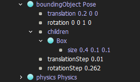
link2的boundingObject
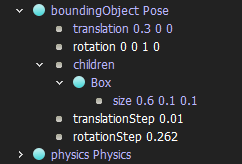
link3的boundingObject
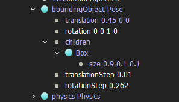
以上設置完成後套入這個控制程式(注意請務必放置於controllers當中，且程式名稱需與資料夾相同)然後在robot的controlle當中開啟即可以模擬。
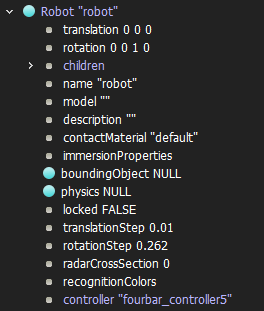
心得:HW1的翻版，pose這個功能運用得當，然後知道該如何更改rotation並且知道angle換算rad就不會遇到太多問題。
Exam <<
Previous Next >> Exam2